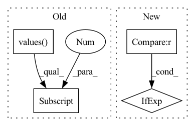

Pattern ID :7555
Before Change
if _gp not in freq:
raise ValueError(f"freq(={freq}) missing group(={_gp})")
if len(set(freq.values())) == 1:
self.freq = list(freq.values())[0]
else:
assert self.sample_config, f"freq(={self.freq}), sample_config cannot be None/empty"
assert isinstance(self.sample_config, dict), f"sample_config(={self.sample_config}) must be dict"
assert (After Change
self.freq = freq
// sample
self.sample_config = sample_config if sample_config is not None else {}
self.sample_benchmark = sample_benchmark
self.can_sample = False
super().__init__(config)In pattern: SUPERPATTERN
Frequency: 3
Non-data size: 4
Instances Fragment ID: 25080414
Project Name: microsoft/qlib
Commit Name: 3605cd7b96d0e689c7b7b334ac1a7bffc7245d95
Time: 2021-09-07
Author: zhu.pengrong@foxmail.com
File Name: qlib/data/dataset/loader.py
M Class Name: QlibDataLoader
N Class Name: QlibDataLoader
M Method Name: __init__(7)
N Method Name: __init__(7)
M Parent Class: DLWParser
N Parent Class: DLWParser
M File Name: qlib/data/dataset/loader.py
N File Name: qlib/data/dataset/loader.py
M Start Line: 184
M End Line: 205
N Start Line: 184
N End Line: 202
Before Change
mapping = metric_params.mapping
log_name = metric_params.log_name if metric_params.log_name is not None else metric_params.name
if log_name in added_log_names:
mapping_values = list(mapping.values() )
log_name += + "_" + mapping_values[0] + "_" + mapping_values[1]
else:
added_log_names.add(log_name)
metrics.append(MetricWithUtils(metric=metric, mapping=mapping, log_name=log_name))After Change
continue
metric = METRICS.get(metric_params.name)(**metric_params.params)
mapping = metric_params.mapping
prefix = "" if metric_params.log_prefix is None else metric_params.log_prefix + "_"
log_name = prefix + metric_params.name
if log_name in added_log_names:
// If prefix not set. Fragment ID: 25080412
Project Name: eora-ai/torchok
Commit Name: e8f0ac156b30fb07321c91bf711a530c6ee900d2
Time: 2022-05-05
Author: rashit.bayazitov.1995@gmail.com
File Name: src/metrics/metric_manager.py
M Class Name: MetricManager
N Class Name: MetricManager
M Method Name: __get_phase_metrics(3)
N Method Name: __get_phase_metrics(3)
M Parent Class: nn.Module
N Parent Class: nn.Module
M File Name: src/metrics/metric_manager.py
N File Name: src/metrics/metric_manager.py
M Start Line: 117
M End Line: 127
N Start Line: 117
N End Line: 135
Before Change
if isinstance(self._student_inputs, Tensor)
else self._student_inputs[0].device
if isinstance(self._student_inputs, Iterable)
else [
tens.device
for tens in self._student_inputs.values()
if isinstance(tens, Tensor)
][0]
)
self._teacher.to(target_device)
teacher_outputs = tensors_module_forward(After Change
self._hardness * teacher_loss
)
global_step = kwargs.get("global_step")
global_step = epoch * steps_per_epoch if global_step is None else global_step
_log_losses(self.loggers, global_step, loss, teacher_loss, distillation_loss)
return distillation_loss
Fragment ID: 25080413
Project Name: neuralmagic/sparseml
Commit Name: 6a4767337b993070bc55cc0bac99c076ab84cb47
Time: 2021-10-07
Author: tuan@neuralmagic.com
File Name: src/sparseml/pytorch/optim/modifier_distillation.py
M Class Name: DistillationModifier
N Class Name: DistillationModifier
M Method Name: loss_update(8)
N Method Name: loss_update(6)
M Parent Class: ScheduledModifier
N Parent Class: ScheduledModifier
M File Name: src/sparseml/pytorch/optim/modifier_distillation.py
N File Name: src/sparseml/pytorch/optim/modifier_distillation.py
M Start Line: 241
M End Line: 297
N Start Line: 225
N End Line: 290